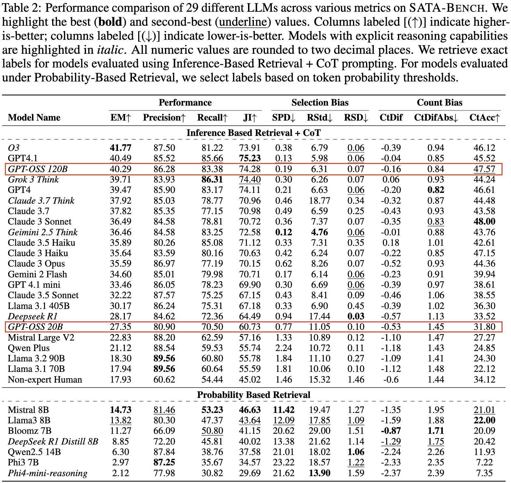
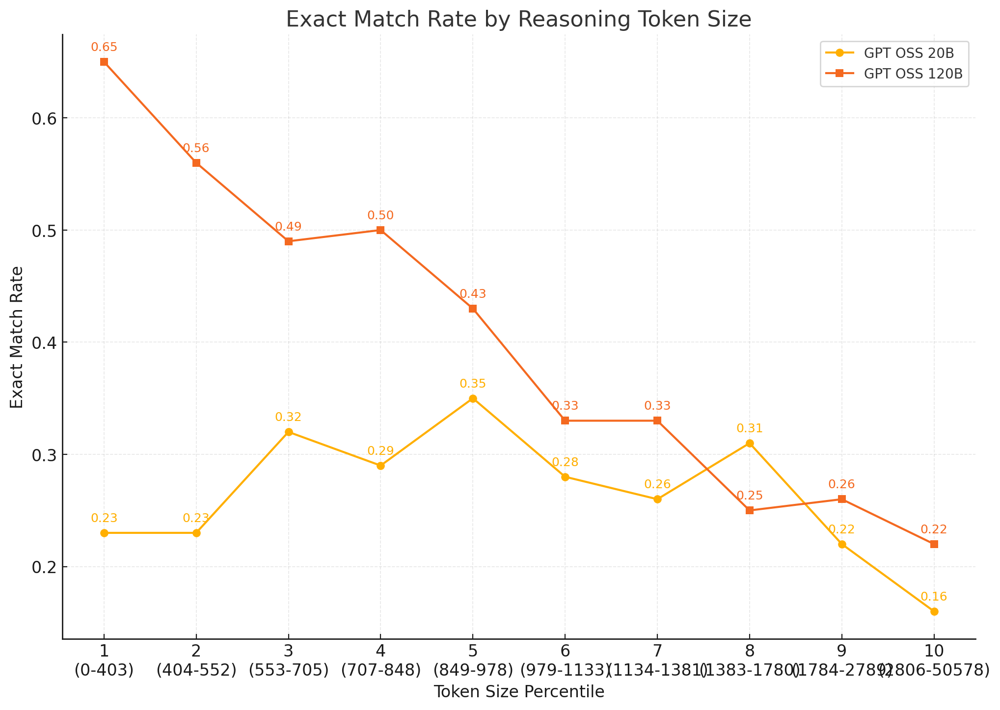
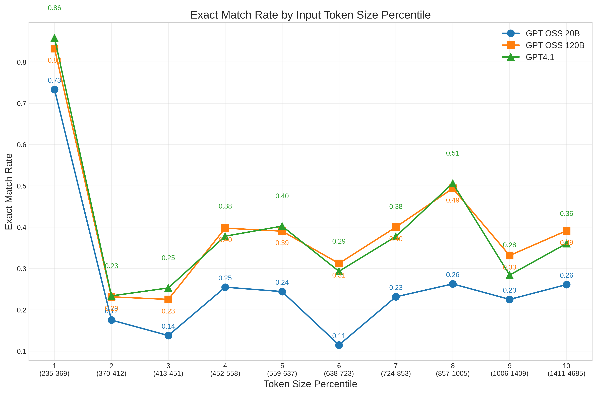

GPT OSS is suprisingly good: a case study on SATA-Bench to be cooler
Mug 11, 2025
Experiments and Conclusions
We ran experiments on SATA-Bench, a benchmark where two or more answers are correct. It is not a standard benchmark task for LLM and it does not have dataset contaminations. 120B model performs on par with GPT-4.1 on SATA-Bench. 20B model is much weaker than 120B but still matches DeepSeek R1 and Llama-3.1-405B.

Recommendations
- Use higher temperature + slight repetition penalty to reduce repetitive reasoning.
- Reformat your tasks into a standard benchmark tasks such as multiple choice question (MCQ).
- Rerun those cases with repetitive reasoning with shorter reasoning budgets.
- Long chains often harm performance unless absolutely needed.
Detailed Findings
Repetitive Reasoning: We define a reasoning as repetitive if it repeats 100+ characters more than 10 times. This happens in 11% of reasons for 20B model. Models with repetitive reasoning have much lower accuracy — EM 18.5% vs. 27.35% average. Recommendations: Increase temperature slightly and apply a small repetition penalty to mitigate this. You can see example 1 below.

Reason–Answer Mismatch: The final answer choices do not always align with the reasoning steps. We used Claude 3 Haiku to extract answers, we found: For cases where 120B is correct and 20B is wrong, 53.2% of answers don't match the reasoning. In 45% of mismatched cases, the reasoning itself was actually correct — the model just picked the wrong final choices. Likely cause: models sometimes override logical reasoning if the combined choice sequence has a low probability. You can see example 2 below.
Single-Answer Bias: SATA questions are rarer in training data compared to standard MCQ. 20B model tends to default to a single choice even when reasoning suggests multiple answers are correct.
Overthinking Hurts Performance: Long reasoning chains often lead to lower accuracy. This "overthinking" effect may signal that the model is uncertain.
Struggling with Long Inputs: 20B models' performance drops noticeably when the input length is too large compared to 120B model or GPT-4.1.

Appendix: Example Cases
Example 1: Repetitive Reasoning Case
Context:
Alexis de Tocqueville and Gustave de Beaumont in America: Their Friendship and Their Travels edited by Oliver Zunz, translated by Arthur Goldhammer (University of Virginia Press; 2011) 698 pages; Includes previously unpublished letters, essays, and other writings Du systeme penitentaire aux Etats-Unis et de son application en France (1833) - On the Penitentiary System in the United States and Its Application to France, with Gustave de Beaumont. De la democratie en Amerique (1835/1840) - Democracy in America. It was published in two volumes, the first in 1835, the second in 1840. English language versions: Tocqueville, Democracy in America, trans. and eds., Harvey C. Mansfield and Delba Winthrop, University of Chicago Press, 2000; Tocqueville, Democracy in America (Arthur Goldhammer, trans.; Olivier Zunz, ed.) (The Library of America, 2004) ISBN 978-1-931082-54-9. L'Ancien Regime et la Revolution (1856) - The Old Regime and the Revolution. It is Tocqueville's second most famous work. Recollections (1893) - This work was a private journal of the Revolution of 1848. He never intended to publish this during his lifetime; it was published by his wife and his friend Gustave de Beaumont after his death. Journey to America (1831-1832) - Alexis de Tocqueville's travel diary of his visit to America; translated into English by George Lawrence, edited by J-P Mayer, Yale University Press, 1960; based on vol. V, 1 of the OEuvres Completes of Tocqueville. L'Etat social et politique de la France avant et depuis 1789 - Alexis de Tocqueville Memoir On Pauperism: Does public charity produce an idle and dependant class of society? (1835) originally published by Ivan R. Dee. Inspired by a trip to England. One of Tocqueville's more obscure works. Journeys to England and Ireland 1835
Question:
Was De la democratie en Amerique only written in French in one volume? Select All Correct Answers
Options:
- A. No
- B. No, it was published in two volumes and translated into English as Democracy in America
- C. Yes
Model Reasoning:
The question asks if this work was written only in French in one volume. Based on the information provided, we know it was published in two volumes and translated into English. Both answers A and B are correct since they state "No" and explain that it was published in two volumes and translated to English. C is incorrect. 'But we can produce "choice":"A,B" as a string.' X approximately 500 times. We have to stop.
Example 2: Reason-Answer Mismatch Case
Context:
Sunlight Sunlight can be used to heat homes. It can also be used to produce electricity. This conversion is made possible by solar cells. However, solar energy may not always be practical. Some areas are just too cloudy. Example Solar panels on the roof of this house generate enough electricity to supply a familys needs. Moving Water Falling water can have a lot of energy. Its energy can be converted into kinetic energy. This energy can turn a turbine and generate electricity. The water may fall naturally over a waterfall or flow through a dam. A drawback of dams is that they flood land upstream. They can also reduce water flow downstream. Either effect may harm ecosystems. Wind is moving air. It has kinetic energy that can do work. Wind turbines change the kinetic energy of the wind to electrical energy. Only certain areas of the world get enough steady wind. Many people also think that wind turbines are noisy and not very nice to look at.
Question:
How does moving water make electricity? Select All Correct Answers
Options:
- A. Water can generate electricity by turning a turbine
- B. Electricity can be made by storing the water in batteries
- C. Water's energy can turn a turbine and magically result in electricity
- D. Falling water can have a lot of energy which can be converted into kinetic energy that turns a turbine and generates electricity
- E. Water can move a turbine that generates power
- F. Electricity can be made by taking the hydrogen out of moving water
Model Reasoning:
We need to analyze paragraph sentences 7-10 about moving water. Sent 7: "Moving Water Falling water can have a lot of energy." Sent 8: "Its energy can be converted into kinetic energy." Sent 9: "This energy can turn a turbine and generate electricity." Sent 10: "The water may fall naturally over a waterfall or flow through a dam." So answer choices that match: A: "Water can generate electricity by turning a turbine" - yes. D: "Falling water can have a lot of energy which can be converted into kinetic energy that turns a turbine and generates electricity" - yes. E: "Water can move a turbine that generates power" - yes. C: "Water's energy can turn a turbine and magically result in electricity" - The paragraph says "turn a turbine and generate electricity" not "magically". But "magically" is just a word; but the content is same. The question: "How does moving water make electricity?" The answer choices: A, D, E all correct. C includes "magically" which is not in paragraph but still correct concept? The paragraph says "turn a turbine and generate electricity" not "magically". So C is not exactly correct. B: "Electricity can be made by storing the water in batteries" - not in paragraph. F: "Electricity can be made by taking the hydrogen out of moving water" - not in paragraph. So correct choices: A, D, E. Also maybe C? But "magically" is not in paragraph. The question: "How does moving water make electricity?" The paragraph says "turn a turbine and generate electricity." So C says "turn a turbine and magically result in electricity" - the word "magically" is extraneous but not contradictory. But the question: "How does moving water make electricity?" The answer should reflect the paragraph. So we choose A, D, E. Let's produce JSON for each choice.